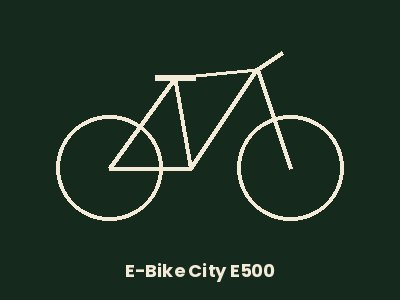

Bici Urbana U100
Cómoda y ligera, con cesta delantera y luces. Ideal para moverse por el centro.
Recorre la ciudad y el anillo verde con nuestras bicicletas de alquiler. Antes de reservar, consulta las condiciones del servicio de alquiler.
Cómoda y ligera, con cesta delantera y luces. Ideal para moverse por el centro.

Asistencia eléctrica hasta 25 km/h y 70 km de autonomía.
| Bicicleta | 1 hora | Medio día | Día completo |
|---|---|---|---|
| Bici Urbana U100 | 4 € | 12 € | 18 € |
| E-Bike City E500 | 8 € | 25 € | 38 € |
| Precios con IVA. Casco y candado incluidos. | |||